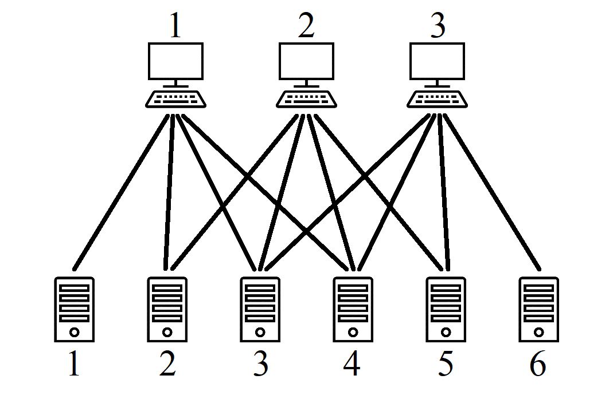

Hezardastan, a leading information technology group in Iran, has a huge data center containing $n$ servers and $m$ terminals (where $m \le n$). A terminal is a pair of keyboard and monitor that can be connected to a server for administrative purposes. The servers are numbered 1 through $n$ and the terminals are numbered 1 through $m$. This data center has a network topology in which not every terminal is necessarily able to connect to every server. For example, the figure below depicts 3 terminals and 6 servers where a terminal can connect to a server if a line is drawn between them.

A subset $S$ of the servers with size $m$ is called manageable if its members are allowed by the network topology to be simultaneously managed by the terminals,i.e. each terminal can be connected to a distinct server in $S$. For example, the subset ${2, 3, 6}$ in the example above is manageable as its members can be respectively managed by the terminals ${1, 2, 3}$. A subset of the servers is called unmanageable if it has size $m$ and is not manageable. A network topology is called totally manageable when it causes no unmanageable subset of servers. For example, the network topology shown in the example above is totally manageable, but if the connection link between terminal 2 and server 5 is removed, then it will not be totally manageable anymore since the subsets ${1, 5, 6}$, ${2, 5, 6} , {3, 5, 6}$, and ${4, 5, 6}$ will become unmanageable. Given a network topology for the data center, you have to find if it is totally manageable or it makes an unmanageable subset.
The first line of input contains two integers $m$ and $n$ separated with a single space ($ 1 \le m \le 150, 1 \le n \le 400, m \le n$). The next $m$ lines describe the network topology by an $m \times n$ matrix. Each of these lines contains $n$ space-separated integers which are either 0 or 1. The $j$-th number (for $1 \le j \le n$) in the ($1 + i$)-th line of input (for $1 \le i \le m$) is 1 if terminal $i$ can connect to server $j$, and it is 0 otherwise.
If the given network topology is totally manageable, you only have to print 1 in the first line of output. Otherwise, you should print 0 in the first line of output and an unmanageable subset of servers in the second line in the form of $m$ space-separated integers (indicating the server numbers, in any arbitrary order). If there are multiple unmanageable subsets, you can print any one of them.